Show code
pacman::p_load(tidyverse)This exercise walks through the core building blocks of ggplot2 — R’s grammar-of-graphics plotting library — using exam score data from a cohort of Primary 3 students. We cover everything from basic bar charts to layered plots with statistics and facets.
The data has 7 variables:
ID, CLASS, GENDER, RACEMATHS, ENGLISH, SCIENCEWe use pacman to load tidyverse (which bundles ggplot2, readr, and more).
pacman::p_load(tidyverse)exam_data <- read_csv("data/Exam_data.csv")
glimpse(exam_data)Rows: 322
Columns: 7
$ ID <chr> "Student321", "Student305", "Student289", "Student227", "Stude…
$ CLASS <chr> "3I", "3I", "3H", "3F", "3I", "3I", "3I", "3I", "3I", "3H", "3…
$ GENDER <chr> "Male", "Female", "Male", "Male", "Male", "Female", "Male", "M…
$ RACE <chr> "Malay", "Malay", "Chinese", "Chinese", "Malay", "Malay", "Chi…
$ ENGLISH <dbl> 21, 24, 26, 27, 27, 31, 31, 31, 33, 34, 34, 36, 36, 36, 37, 38…
$ MATHS <dbl> 9, 22, 16, 77, 11, 16, 21, 18, 19, 49, 39, 35, 23, 36, 49, 30,…
$ SCIENCE <dbl> 15, 16, 16, 31, 25, 16, 25, 27, 15, 37, 42, 22, 32, 36, 35, 45…What I see: 322 students, scores ranging widely — MATHS goes from single digits to near-perfect. Should be interesting to visualise!
Base R can make a histogram in one line:
hist(exam_data$MATHS)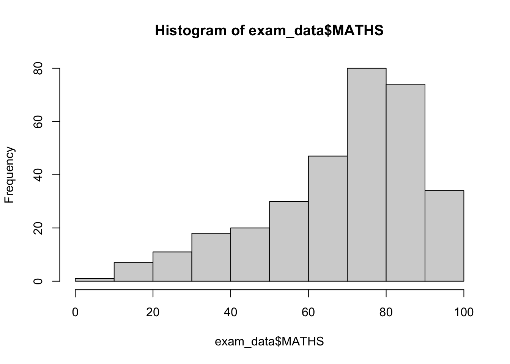
But ggplot2 gives us a grammar — a structured, composable way of building charts. Instead of memorising different function signatures for every plot type, you always think in terms of:
ggplot2 is built on Leland Wilkinson’s Grammar of Graphics. A plot is made of stacked layers:
| Layer | What it does |
|---|---|
data |
The dataset |
aes() |
Maps variables to visual properties |
geom_*() |
The actual chart shape |
stat_*() |
Statistical transformations |
facet_*() |
Split into sub-plots |
coord_*() |
Coordinate system |
theme_*() |
Non-data styling |
Calling ggplot() alone initialises the object with no plot yet — just a blank canvas.
ggplot(data = exam_data)
Adding aes() tells ggplot what variable goes where. Here we set the x-axis to MATHS scores.
ggplot(data = exam_data,
aes(x = MATHS))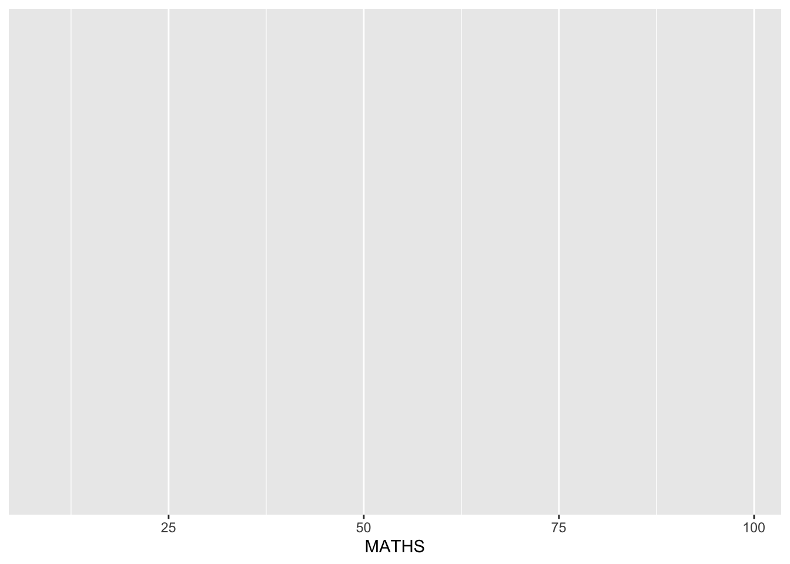
geom_bar()How many students are there per race group?
ggplot(data = exam_data,
aes(x = RACE)) +
geom_bar(fill = "#4C72B0", color = "white") +
labs(title = "Student Count by Race",
x = "Race", y = "Count") +
theme_minimal()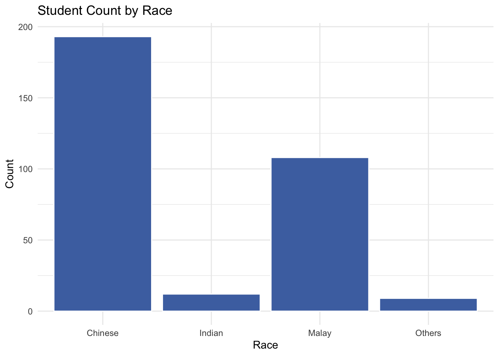
Note: I added a colour and theme here right away — no reason to leave plots looking dull.
geom_dotplot()Each dot = one student’s MATHS score. A more granular look at the distribution than a histogram.
ggplot(data = exam_data,
aes(x = MATHS)) +
geom_dotplot(binwidth = 2.5,
dotsize = 0.5,
fill = "#55A868") +
scale_y_continuous(NULL, breaks = NULL) +
labs(title = "Distribution of MATHS Scores (Dot Plot)",
x = "MATHS Score") +
theme_minimal()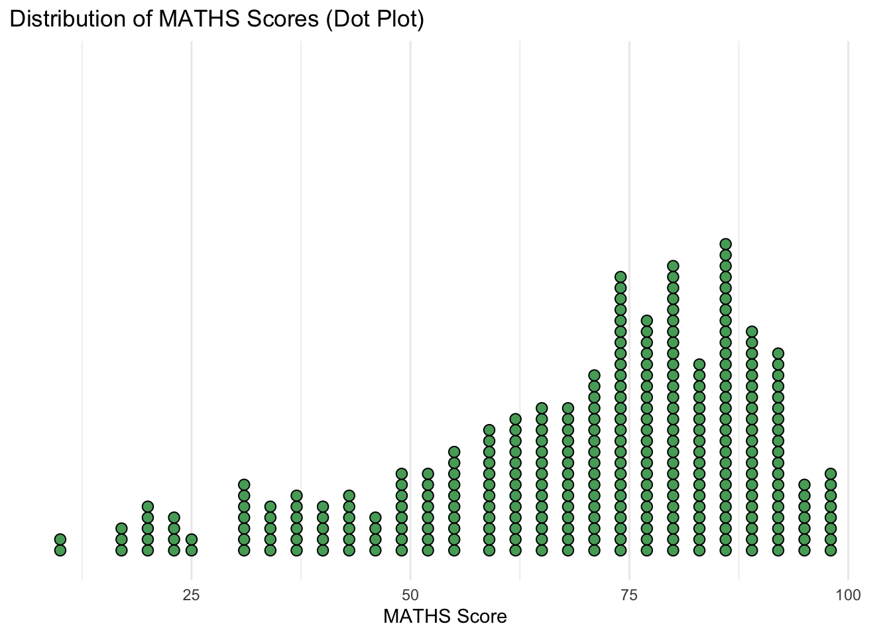
Why turn off the y-axis? The raw y-axis in dotplots shows proportions, not counts — it’s misleading. Removing it makes the chart cleaner.
geom_histogram()A classic. Default uses 30 bins — usually too many.
ggplot(data = exam_data,
aes(x = MATHS)) +
geom_histogram(bins = 20,
color = "white",
fill = "#4C72B0") +
labs(title = "Distribution of MATHS Scores",
x = "MATHS Score", y = "Count") +
theme_minimal()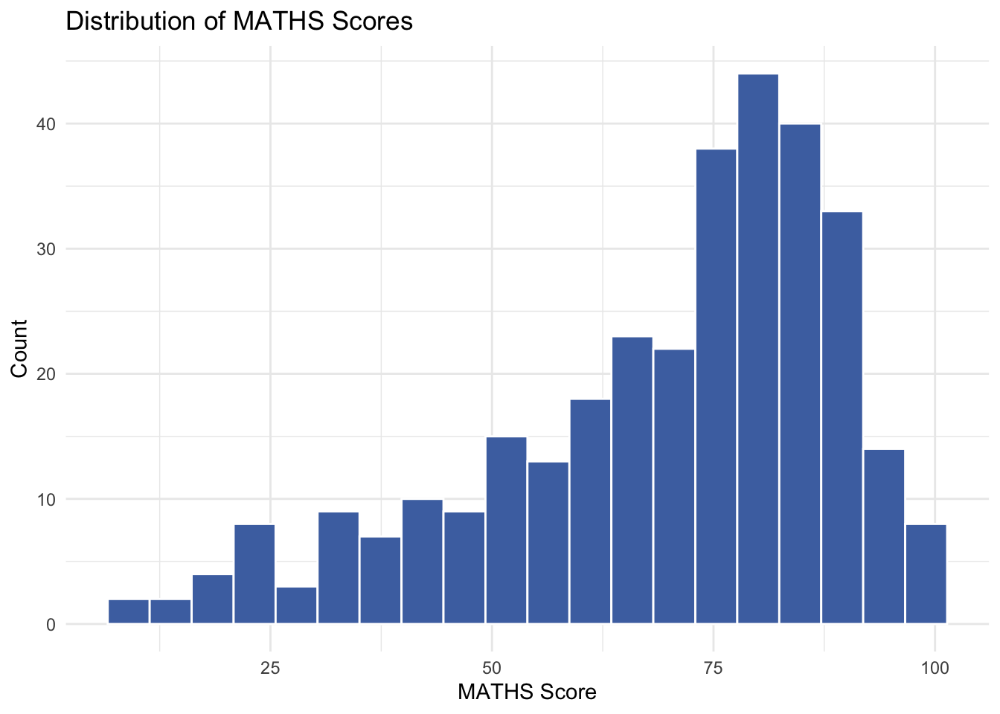
aes()When fill is inside aes(), it maps a variable (GENDER) to colour — ggplot handles the colouring automatically.
ggplot(data = exam_data,
aes(x = MATHS,
fill = GENDER)) +
geom_histogram(bins = 20,
color = "grey30",
alpha = 0.8) +
scale_fill_manual(values = c("Female" = "#DD8452", "Male" = "#4C72B0")) +
labs(title = "MATHS Score Distribution by Gender",
x = "MATHS Score", y = "Count", fill = "Gender") +
theme_minimal()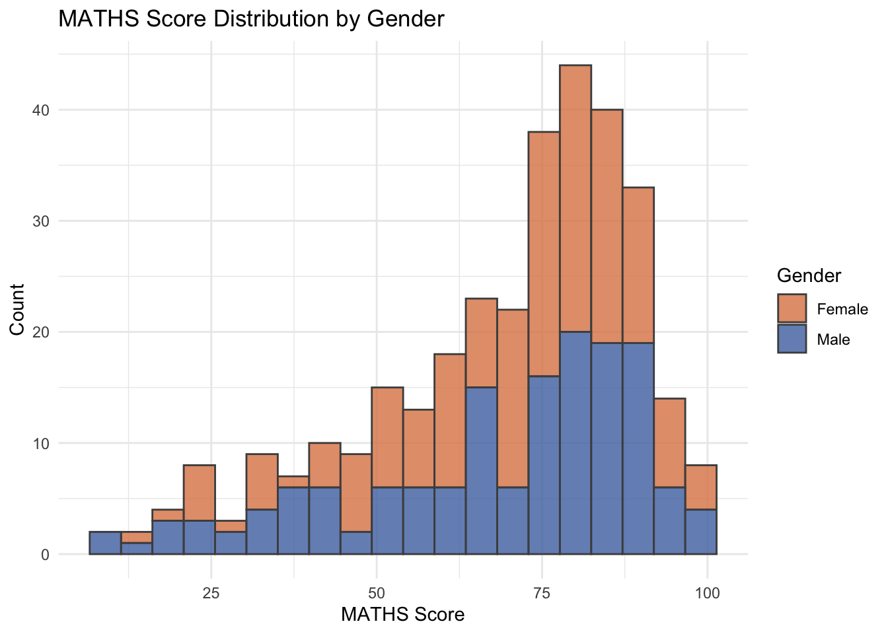
My take: Males seem to have a wider spread. Density plots (next) will make this clearer.
geom_density()A smoothed alternative to the histogram, great for comparing distributions.
ggplot(data = exam_data,
aes(x = MATHS,
colour = GENDER)) +
geom_density(linewidth = 1) +
scale_colour_manual(values = c("Female" = "#DD8452", "Male" = "#4C72B0")) +
labs(title = "MATHS Score Density by Gender",
x = "MATHS Score", y = "Density", colour = "Gender") +
theme_minimal()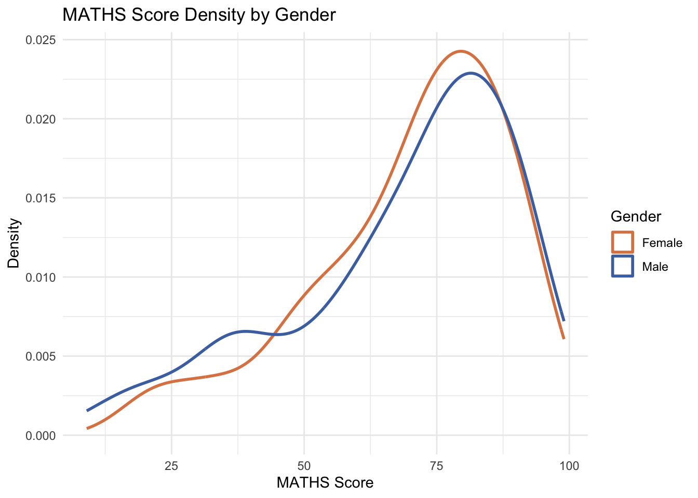
geom_boxplot()Shows the median, IQR, and outliers for MATHS by gender. Adding notch = TRUE helps visually test if medians differ significantly.
ggplot(data = exam_data,
aes(y = MATHS, x = GENDER,
fill = GENDER)) +
geom_boxplot(notch = TRUE, alpha = 0.7) +
scale_fill_manual(values = c("Female" = "#DD8452", "Male" = "#4C72B0")) +
labs(title = "MATHS Score by Gender (Notched Boxplot)",
x = "Gender", y = "MATHS Score") +
theme_minimal() +
theme(legend.position = "none")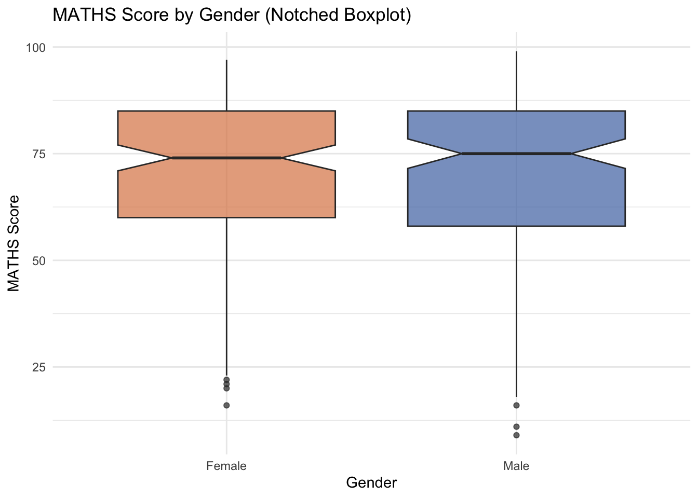
Notches: If the notches don’t overlap between groups, that’s evidence the medians are statistically different.
geom_violin()Like a boxplot but shows the full distribution shape — great for spotting bimodal patterns.
ggplot(data = exam_data,
aes(y = MATHS, x = GENDER,
fill = GENDER)) +
geom_violin(alpha = 0.7) +
scale_fill_manual(values = c("Female" = "#DD8452", "Male" = "#4C72B0")) +
labs(title = "MATHS Score Distribution by Gender (Violin)",
x = "Gender", y = "MATHS Score") +
theme_minimal() +
theme(legend.position = "none")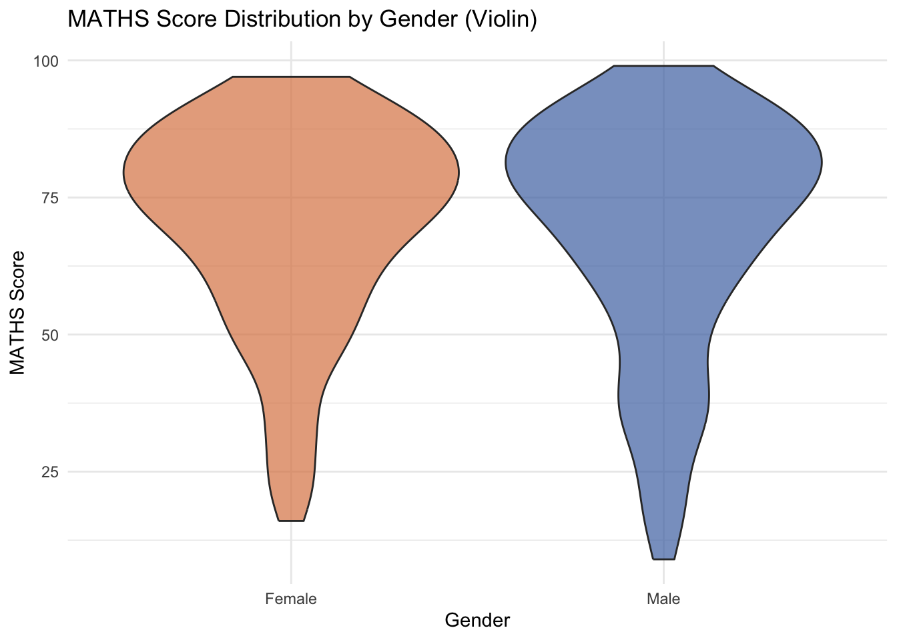
geom_point()Do students who score well in MATHS also score well in ENGLISH?
ggplot(data = exam_data,
aes(x = MATHS, y = ENGLISH)) +
geom_point(colour = "#4C72B0", alpha = 0.5, size = 1.5) +
labs(title = "MATHS vs ENGLISH Scores",
x = "MATHS Score", y = "ENGLISH Score") +
theme_minimal()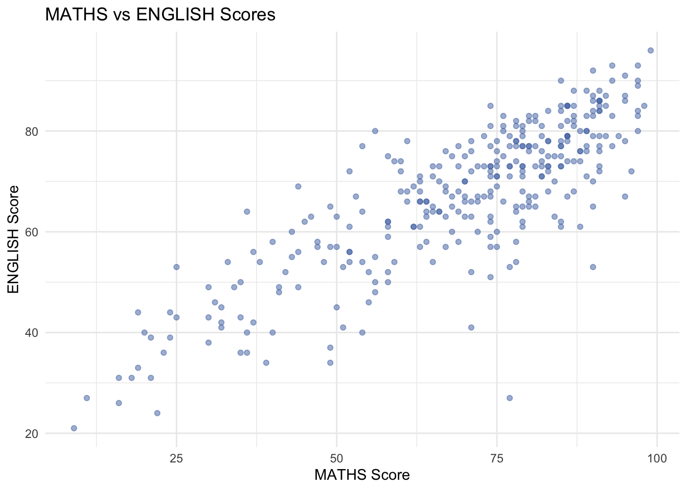
You can stack multiple geoms. Here the individual data points are overlaid on the boxplot.
ggplot(data = exam_data,
aes(y = MATHS, x = GENDER,
fill = GENDER)) +
geom_boxplot(alpha = 0.5, outlier.shape = NA) +
geom_point(position = "jitter", size = 0.6, alpha = 0.4) +
scale_fill_manual(values = c("Female" = "#DD8452", "Male" = "#4C72B0")) +
labs(title = "MATHS Score by Gender — Boxplot with Points",
x = "Gender", y = "MATHS Score") +
theme_minimal() +
theme(legend.position = "none")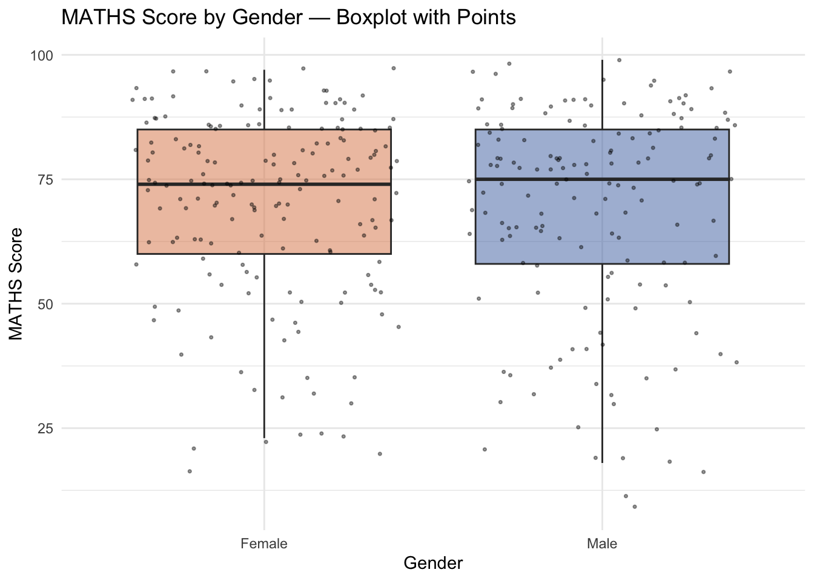
Why jitter? Without it, points stack on top of each other and you lose information. Jitter adds a tiny random horizontal offset so you can see density.
Boxplots show the median, not the mean. Here we add the mean as a red diamond.
ggplot(data = exam_data,
aes(y = MATHS, x = GENDER)) +
geom_boxplot(fill = "#C8D8E8") +
stat_summary(geom = "point",
fun = "mean",
colour = "red",
size = 4,
shape = 18) +
labs(title = "MATHS by Gender — Mean shown as ◆",
x = "Gender", y = "MATHS Score") +
theme_minimal()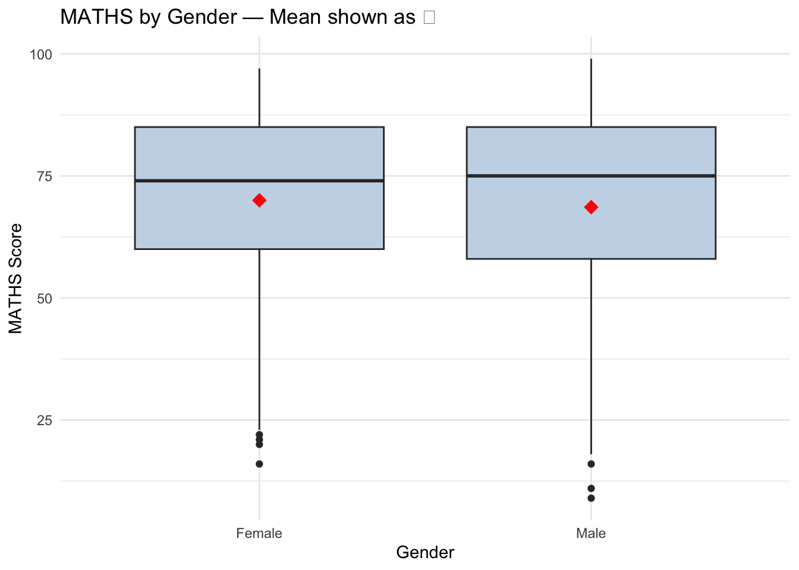
geom_smooth() adds a trend line. Using method = lm gives a straight linear regression line.
ggplot(data = exam_data,
aes(x = MATHS, y = ENGLISH)) +
geom_point(colour = "#4C72B0", alpha = 0.4, size = 1.5) +
geom_smooth(method = lm, linewidth = 0.8,
colour = "#DD8452", fill = "#DD8452", alpha = 0.15) +
coord_cartesian(xlim = c(0, 100), ylim = c(0, 100)) +
labs(title = "MATHS vs ENGLISH — with Linear Trend",
x = "MATHS Score", y = "ENGLISH Score") +
theme_minimal()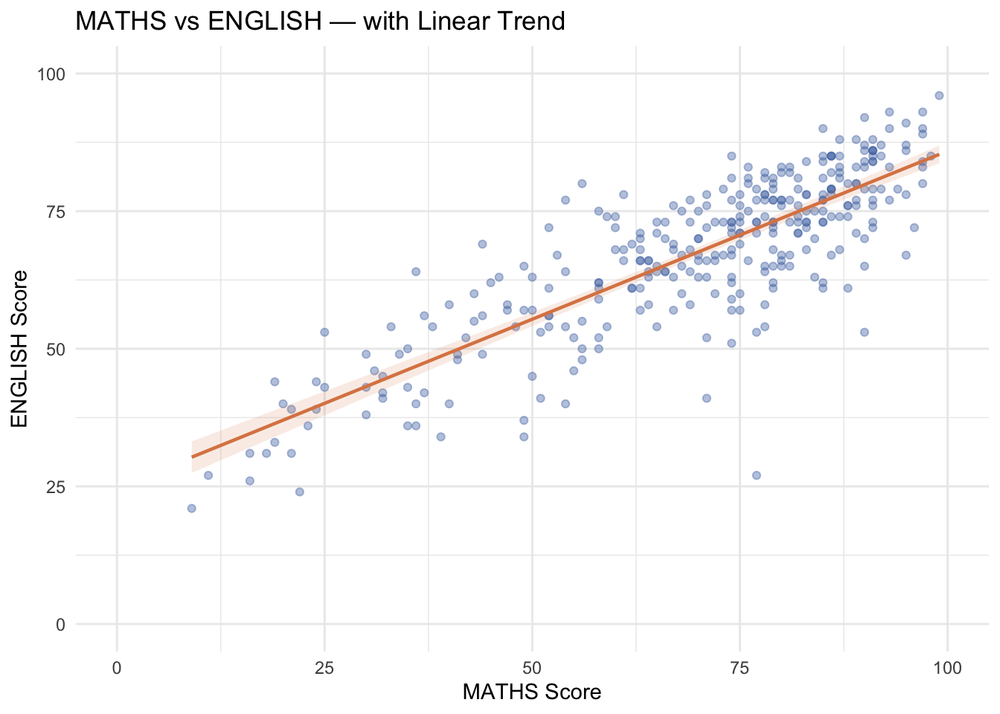
coord_cartesian()forces both axes to the same 0–100 scale so the comparison is fair and not visually distorted.
Facets split one plot into multiple sub-plots by a category — a powerful way to compare across groups without overplotting.
facet_wrap() — by Classggplot(data = exam_data,
aes(x = MATHS)) +
geom_histogram(bins = 15, fill = "#4C72B0", colour = "white") +
facet_wrap(~ CLASS) +
labs(title = "MATHS Score Distribution by Class",
x = "MATHS Score", y = "Count") +
theme_minimal()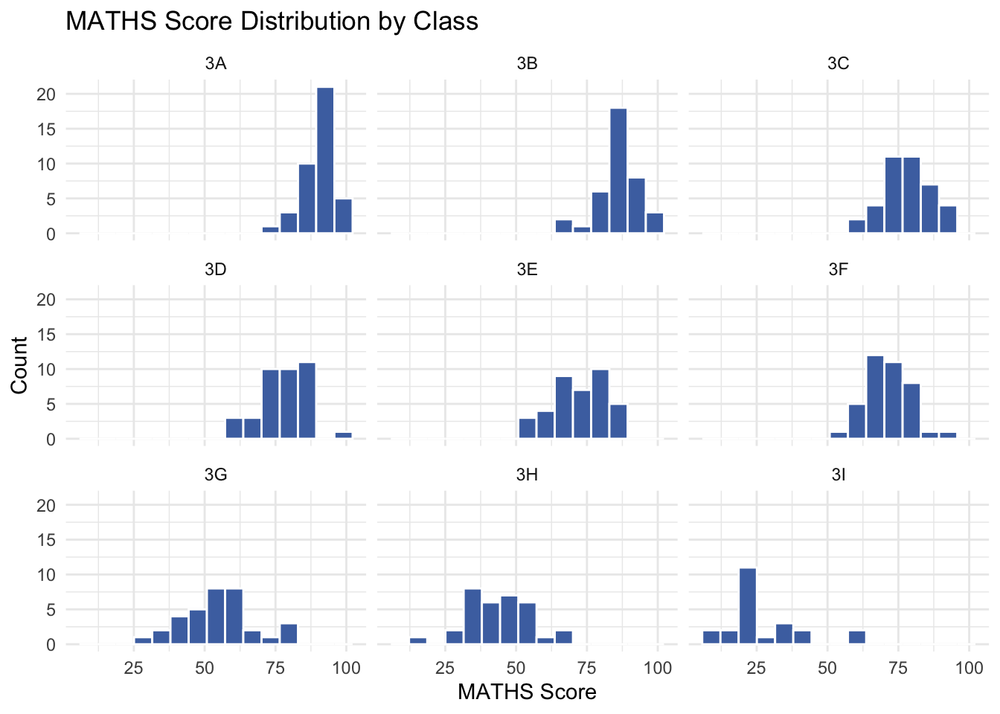
facet_grid() — by Class in a gridggplot(data = exam_data,
aes(x = MATHS)) +
geom_histogram(bins = 15, fill = "#55A868", colour = "white") +
facet_grid(~ CLASS) +
labs(title = "MATHS Distribution by Class (Grid Layout)",
x = "MATHS Score", y = "Count") +
theme_minimal()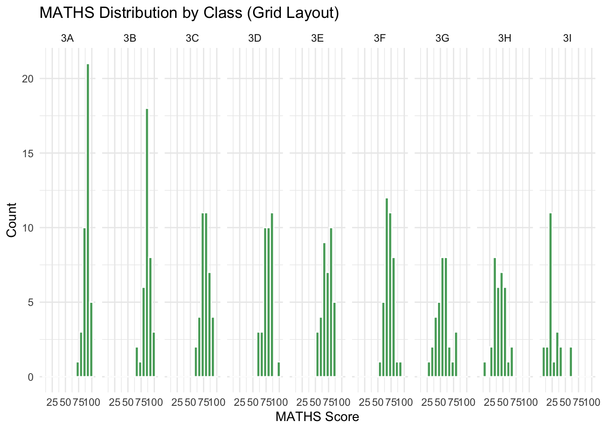
facet_wrap vs facet_grid:
facet_wrapflows panels like text — it wraps into rows automatically.facet_gridis rigid and always stays in a single row/column grid.
coord_flip()When category labels are long, a horizontal bar chart is easier to read.
ggplot(data = exam_data,
aes(x = RACE)) +
geom_bar(fill = "#4C72B0") +
coord_flip() +
labs(title = "Student Count by Race (Horizontal)",
x = "Race", y = "Count") +
theme_minimal()Themes control the non-data look of a plot. Here’s the same chart with three different themes side-by-side in concept (shown individually):
base_plot <- ggplot(data = exam_data, aes(x = RACE)) +
geom_bar(fill = "#4C72B0") +
coord_flip() +
labs(x = "Race", y = "Count")
# theme_gray (default)
base_plot + theme_gray() + labs(title = "theme_gray()")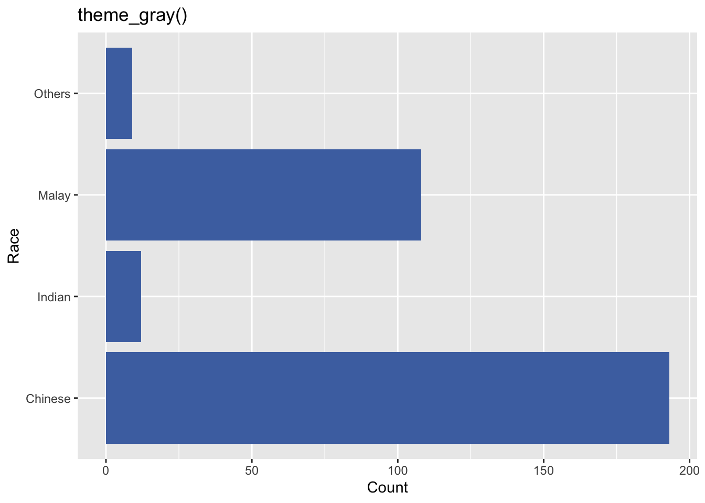
base_plot + theme_classic() + labs(title = "theme_classic()")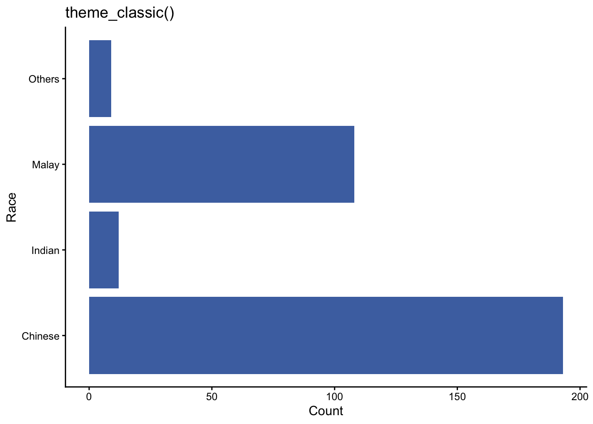
base_plot + theme_minimal() + labs(title = "theme_minimal()")My preference:
theme_minimal()— clean, no unnecessary gridlines or grey background. Lets the data speak.
By working through this exercise, I’ve learned:
+ adds something newaes() inside the call maps data to visuals; arguments outside set fixed valuesstat_summary() lets you overlay computed statistics (like means) on any charttheme_minimal() is clean and professional